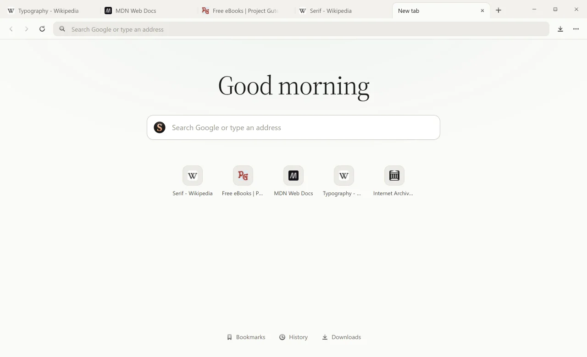
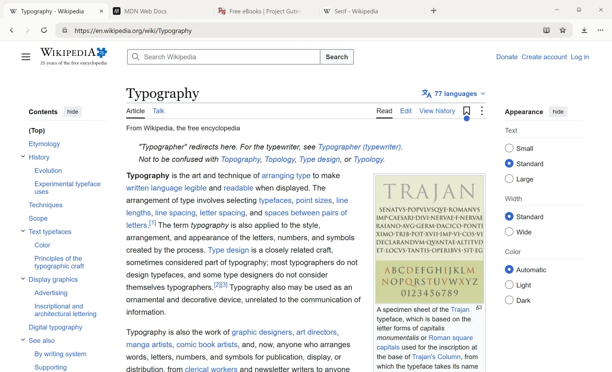
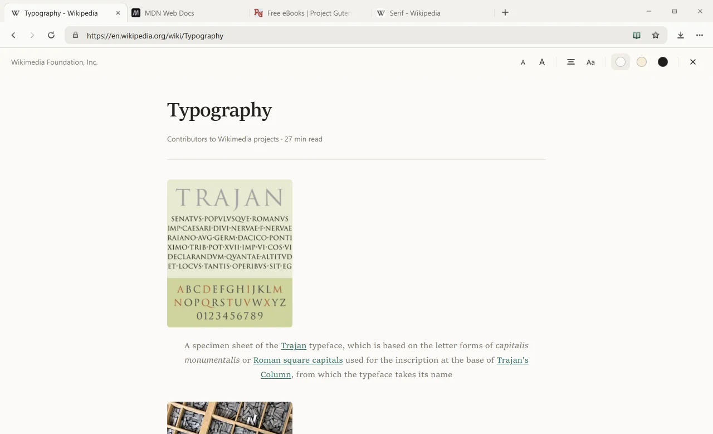
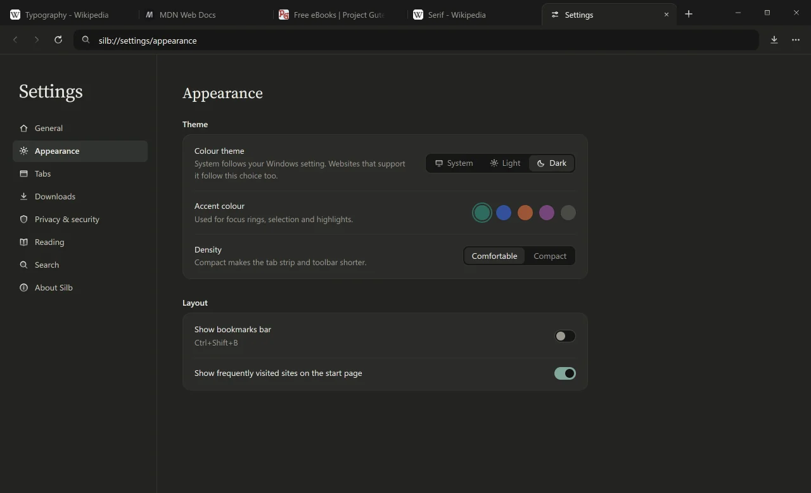
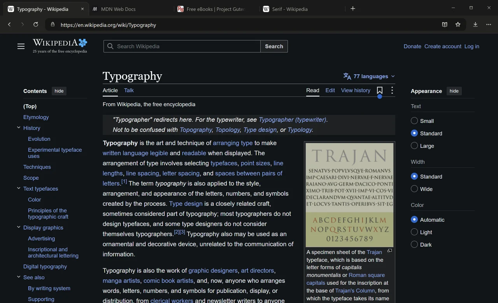

A start page, not a feed.
A search box and your last visited sites. That’s it.

Low RAM usgae. Minimalistic. No clutter. Nothing to get distracted to.
Free for Windows 10 and 11.

A search box and your last visited sites. That’s it.

Reading mode drops the menus, styles, sidebars and all the chicks.

Tailor Silb to your preferences.

Choose the theme that suits your mood.

Installs Silb to your PC for daily use.
Download installerNo install. Runs from anywhere.
Download portableNot code-signed yet. If SmartScreen appears, choose More info, then Run anyway.